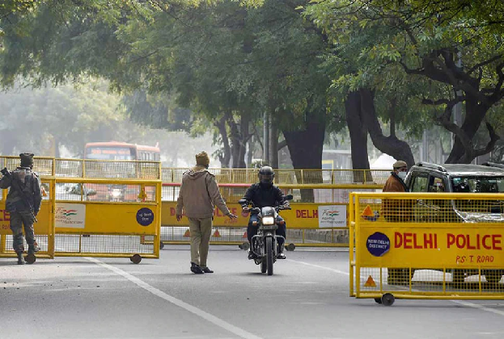
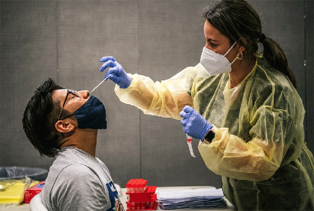
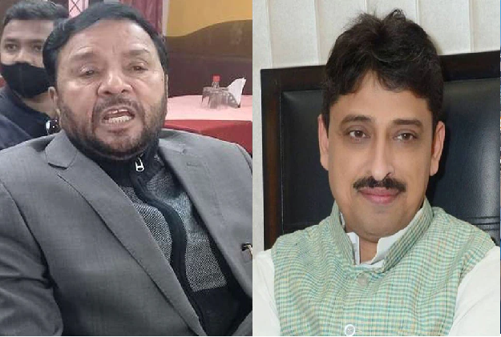
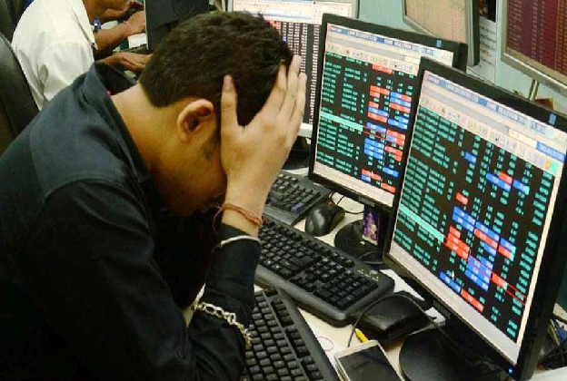

CURRENT-AFFAIRS JAN 21 2022
INDIA
1. Delhi: Weekend curfew will end, odd-even system will also be removed from shops, CM Kejriwal sends recommendation to LG
Weekend curfew may be removed from Delhi soon amidst the decreasing new cases of corona virus in the country's capital. CM Arvind Kejriwal has sent a recommendation to the Lieutenant Governor to remove the weekend curfew.
New Delhi: Weekend curfew may be removed from Delhi soon amidst the decreasing new cases of corona virus in the capital of the country. CM Arvind Kejriwal has sent a recommendation to the Lieutenant Governor to remove the weekend curfew. With the removal of weekend curfew from Delhi, the odd-even system applicable for opening shops in the markets will also be removed. Private offices will also be able to run at 50 percent capacity. Delhi Chief Minister Arvind Kejriwal has also written about this in the recommendation sent to the LG.
Let us inform that on Thursday, 12 thousand 306 new cases of corona infection were reported in Delhi and 43 people died. At the same time, 18 thousand 815 patients were recovered from corona infection.
According to the health bulletin, there is definitely a decline in new cases of corona in Delhi, but there is no relief in the death toll at the moment. However, the corona infection rate in Delhi remains 21.48 percent.
On the increasing figures of deaths in Delhi, doctors believe that those patients who are already suffering from serious diseases are dying more under these conditions.
2. Corona's third wave again picked up speed, so many people got infected in 24 hours across the country
About 3.5 lakh new cases of coronavirus have been registered in India in the last 24 hours, which is the highest number of cases in a day during the third wave of Kovid-19.
New Delhi: The havoc of the third wave of Coronavirus in India has started appearing once again and in the last 24 hours about 3.5 lakh cases have been registered across the country. The country has the highest number of cases in a day during the third wave of Kovid-19.
3.47 lakh new cases surfaced in 24 hours
According to the data released by the Union Health Ministry on Friday morning, 3 lakh 47 thousand 254 new cases of coronavirus have been reported across the country in the last 24 hours, while 703 people died due to the pandemic. Death took place.
29,722 new cases increased in 24 hours
New cases of Coronavirus in India have increased by 29,722 in the last 24 hours. Let us inform that earlier on Thursday (January 20), 3 lakh 17 thousand 532 new cases of Kovid-19 were reported.
3. Airport will be built in every district of this state, CM announced
The Chief Minister chaired a review meeting with the officials on airports, seaports and fishing ports and during this time directed to prepare a plan for setting up airports in every district.
Amaravati (Andhra Pradesh): Andhra Pradesh Chief Minister YS Jagan Mohan Reddy on Thursday chaired a review meeting with officials at airports, seaports and fishing ports. During this, CM Jagan Mohan Reddy gave instructions to the officials to build an airport in every district.
Instructions for making airports in every district
While discussing the aviation sector in the state, Chief Minister YS Jagan Mohan Reddy directed the officials to plan the construction of new airports. During this, he also directed to keep in mind that there should be an airport in every district of the state and each airport should be of standard size, so that small and big aircraft can be landed at the airports.
Order to give priority to greenfield ports
While discussing the ports, the Chief Minister directed the officials to give priority to the construction of three greenfield ports- Ramayapatnam, Machilipatnam and Bhavanpadu in the state. During this, the officials told the CM that the work on Ramayapatnam port would start soon.
4. UP: Avtar Singh Bhadana took a U-Turn, now the voice of the rebel Imran Masood has also changed.
Samajwadi Party-Rashtriya Lok Dal alliance (SP-RLD) candidate Avtar Singh Bhadana on Thursday morning announced not contesting the election on showing symptoms of corona, but his tone changed as soon as the report came negative.
New Delhi: The Uttar Pradesh Legislative Assembly election took a dramatic turn on Thursday when Samajwadi Party-Rashtriya Lok Dal alliance (SP-RLD) candidate Avtar Singh Bhadana did not vote in the morning. declared to fight. However, by the end of the night, Bhadana took a U-turn and announced that he would contest the upcoming assembly elections from Jewar seat in Gautam Budh Nagar district.
Declaration of not contesting elections due to Kovid infection
Avtar Singh Bhadana's lawyer issued a statement on Thursday morning saying that Avtar Singh Bhadana has got corona and he will not contest elections. Avtar Singh Bhadana said that this morning he felt that he had some symptoms of Kovid, so he had told his party that he did not want to risk the lives of the public.
5. DNA: American weapons with terrorists of Kashmir
American soldiers also left about 600,000 small arms while returning from Afghanistan. These weapons also included pistols, rifles, grenade launchers, carbines and machine guns, which were confiscated by Taliban fighters. And now with the same weapons the terrorist organizations of Pakistan are demonstrating their power.
World
1. Threat of espionage in China, foreign players will use this unique phone to escape
Western countries have been on alert about next month's Winter Olympics in Beijing, as they fear their players may be victims of cybercrime. These countries have advised players to take many precautions including the use of burner phones.
Washington: Winter Olympics 2022 are going to be held in China next month, in which players from many countries will participate. While there is a shadow of Corona on these games, there is another threat to the western countries. The National Olympic Committees (NOCs) of some countries are advising their athletes to leave their personal devices at home or use burner phones before traveling to Beijing to keep cyber security in mind. These committees said they would provide temporary equipment to their athletes and staff to avoid security risks and deal with any surveillance during the Games in China from February 4-20.
American committee expressed this apprehension
"It must be recognized that every text, email, online visit and application access can be monitored or tampered with," the United States Olympic and Paralympic Committee said in an advisory, casting doubt on China. The US has asked its players to rent or use disposable laptops and phones in Beijing. Players have also been asked to delete all data from personal devices before and after traveling to China if they are carrying their personal devices. The committee recommended that all members install a virtual private network (VPN) on their devices before leaving the US.
2. Neither the cash was robbed, nor the burglary; Uprooted the bridge and took it away
A shocking incident of theft took place in Ohio city of America. Here the accused cleaned his hands on the bridge itself, not on jewelry or cash. However, the police has arrested the accused.

New York: Many incidents of theft keep coming to the fore in the world. Thieves sometimes clean their hands on such things that people do not believe. One such case was seen in Ohio city. Here a person stole the bridge itself. However, now the bridge has been found and the accused has also been arrested. Police is investigating further.
The bridge was stolen in November
Let us tell you that an 18 meter long pedestrian bridge was stolen from Ohio City. Police said that the team engaged in the investigation has found the stolen bridge in Sharon Township. Police said that a person has also been arrested in connection with the theft. The Akron Bridge was built in 2003 to cross the river in a local park here. It was built as part of a wetland restoration project. It was stored on park property, the contents of which were later to be used for a women's shelter project.
3. Very bad news! So many crore people will be unemployed in 2022
In 2022, the number of unemployed in the world will be 207 million. According to the ILO report, global unemployment will remain above pre-Covid levels until at least 2023.
Geneva: The ILO report states that this year the number of unemployed on the global scale will reach 207 million. The number of unemployed globally will remain above pre-Covid levels until at least 2023. This has been estimated in a report by the International Labor Organization.
Number of unemployed 20.7 crore
It has been said in the report that in this year i.e. 2022, the number of unemployed in the world will be 207 million. This is 21 million more than in 2019. The Geneva-based United Nations agency has lowered its forecast of a revival in the labor market in 2022.
4. 6 year old girl earns 12 lakh rupees on one Instagram post, has 50 lakh followers
People earn lakhs of rupees from social media, but can even an innocent child earn as much as no celebrity earns, and that too by sharing photos of her daily routine, but it is true.
New Delhi: We all know that social media stars earn lakhs of rupees by posting photos on their accounts. A 6 year old girl is earning lakhs of rupees just by updating her daily routine on social media. This girl has 50 lakh followers on Instagram.
Get 12 lakh rupees on one post
According to the news of Daily Star, this 6-year-old girl charges Rs 12 lakh for posting a post on Instagram. The photo is also not special, but the work we do in the daily routine, she uploads photos of the same works on Instagram, but due to this work also she has become a celebrity and now charges up to Rs 12 lakh for a post. This is astonishing earnings according to a small child.
5. Big explosion in Pakistan's Lahore, 3 killed, 27 injured
There has been a big explosion in Lahore, Pakistan in which 3 people have died while 27 people are said to be injured in this blast. It is not yet clear what caused the blast.
Business
1. In the budget, the government tells the sources of income
The general budget is going to be presented in the country soon. In the Union Budget, the government gives the details of its earnings and expenditure. In the budget, the government gives information about all the sources from where it earns in a financial year. In this video, we are giving you information about all the sources from where the government earns. These include many sources including excise duty, income tax, corporate tax and borrowings.
2. After HDFC, SBI, this bank gave good news to customers, increased interest rates; check new rates
For the last few days, big private and government banks of the country are increasing the interest rates. The purpose of banks is to attract investors. For this, on behalf of the banks, the Finance Minister Nirmala Sitharaman is also being demanded to give tax rebate on the FD of three years.
New Delhi: For the last few days, big private and government banks of the country are increasing the interest rates. The purpose of banks is to attract investors. For this, on behalf of the banks, the Finance Minister Nirmala Sitharaman is also being demanded to give tax rebate on the FD of three years. On Thursday, after HDFC Bank, SBI and Canara Bank, ICICI Bank has also changed the interest rates of FD.
This will be the interest rate on the maturity of 90 days
The new interest rates of FD implemented by ICICI Bank have become effective from January 20, 2022. According to the bank's website, ICICI Bank is now offering an interest rate of 2.50 percent on deposits with maturities of 7 to 29 days and 3 percent on FDs with maturities of 30 to 90 days.
FD rate on maturity up to 10 years
Similarly, for FDs with maturities of 91 days to 184 days, 3.5 percent interest is being paid, and 4.40 percent for FDs with tenures ranging from 185 days to less than one year. The bank is offering 5 per cent on FDs of one year to 389 days. The bank is giving 5.60 percent interest rate on FDs maturing in 5 years from 1 day to 10 years.
3. Union Budget 2022: From James Wilson to Nirmala Sitharaman, know the special things related to the country's budget
On February 1, once again Nirmala Sitharaman is going to present the budget of the Modi government. Talking about the history of budget, it is older than independence. For the first time in the country in this way the budget was presented in the year 1860. Let us know 10 special things related to the budget.
4. 7.4 lakh crores of investors were 'depleted', these are the major reasons for the fall of the stock market
Stock Market: The trend of decline in the Indian stock market continued for the third consecutive day. At the end of the trading session on Thursday, the 30-point Sensex closed at 59464.62, down 634.20 points. On the other hand, Nifty fell by 181.40 points to reach the level of 17757.00.
New Delhi: Stock Market: The trend of decline in the Indian stock market continued for the third consecutive day. At the end of the trading session on Thursday, the 30-point Sensex closed at 59464.62, down 634.20 points. On the other hand, Nifty fell by 181.40 points to reach the level of 17757.00. In the last three trading sessions, the Sensex has seen a fall of about 2200 points.
how many lakh crores was wasted
Investors have suffered huge losses due to the three-day fall in the Sensex and Nifty. According to one figure, 7.4 lakh crore rupees of investors were lost in three days. The market capitalization on the BSE index was Rs 2,80,02,437.71 on January 17, which declined to Rs 2,73,27,616.15 on January 20.
cause of decline
Experts are assuming two main reasons for the fall in the stock market. The first reason is that the stock market has been running at a record level for a long time. In such a situation, investors are withdrawing their money. The market is closing with a red mark due to profit-booking. At the same time, as another reason, experts are also telling the rise in the prices of crude oil in the international market. He says that the market is under pressure due to the price of crude oil.
5. Gold-Silver Price Today: After gold, silver prices caught fire, increased to this level
Gold Price Today in Delhi: After a few days of softening, the prices of gold and silver have started increasing again in the Indian bullion market. On Thursday, for the second consecutive day, the price of gold and silver saw an increase.
New Delhi : Gold Price Today in Delhi : After a few days of softening, the prices of gold and silver have started increasing again in the Indian bullion market. On Thursday, for the second consecutive day, the price of gold and silver saw an increase. In this way the price of silver has crossed 64 thousand.
Rate reached Rs 48620
Gold, which reached below 48 thousand two days ago, is being sold on January 20 for Rs 48620 per 10 grams. Let us tell you that gold rates are issued twice every day. The rate of Rs 48620 was updated on https://ibjarates.com/ https://ibjarates.com/ at around 12 noon on Thursday.